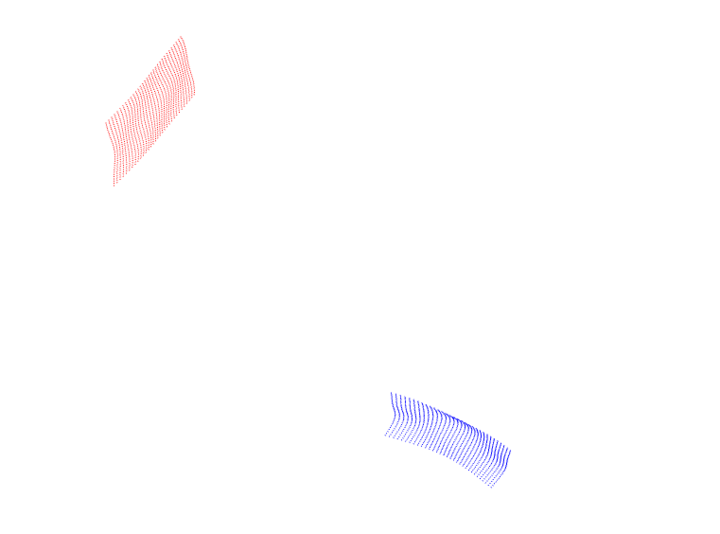
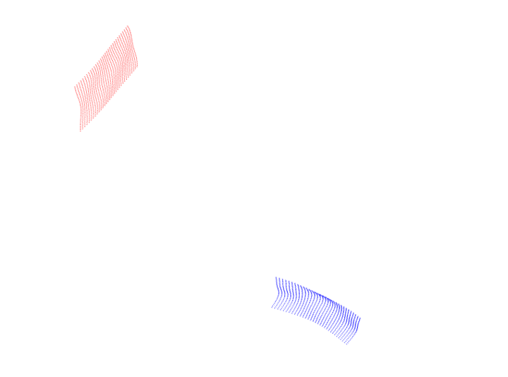

1. What I am trying to achieve
I am developing a deep learning–based grasp quality classifier that predicts whether a pair of local surface patches is a good grasp location (prediction → 0) or a bad grasp location (prediction → 1). The ultimate goal is to deploy this on a real robot manipulator to grasp novel, unseen objects robustly.
Instead of using images or large grasp datasets, I propose a geometry-based representation: the model is given only the XYZ coordinates inside two 32×32 local patches of the object surface.
These patches come from:
- The same camera
- Or two different, opposite cameras
Crucially, they are always expressed in the same coordinate frame, so the geometry is consistent. This is a minimal-input, low-dimensional, and highly interpretable representation.
2. How the dataset is built
Training dataset
I manually created a synthetic dataset consisting of:
- Local 32×32 surface patches represented purely as XYZ coordinates
- Each training example contains two patches
- Each pair is labeled: 0 → good grasp, 1 → bad grasp
Thus, the model learns directly from local geometry, not pixel intensities or full object models.
Training Dataset Examples
✓ Good Grasp Pairs
These patch pairs represent stable grasp locations with compatible surface geometries.
✗ Bad Grasp Pairs
These patch pairs represent unstable configurations with incompatible surface geometries.
 

Testing dataset (unseen synthetic domain)
I created a second dataset using BlenderProc:
- A single object (ape) placed in different poses, backgrounds, and scenes
- Randomly sampled 100 points per camera view
- Extracted a 32×32 spatial patch around each sampled point
Testing Dataset Visualization
Step 1: Random Point Sampling from Camera Views
100 points are randomly sampled on the ape object from left and right camera perspectives.
Step 2: Patch Extraction
Around each sampled point, a 32×32 local surface patch is extracted. These patches are what the model is tested on.
Step 3: Model Predictions
The pretrained model evaluates all pairwise combinations zero-shot and predicts grasp quality.
Real-time prediction showing the model's grasp quality classification
Then I created all pairwise combinations:
- Patch from cam1 paired with patch from cam2
- Patch from cam1 paired with another patch from cam1
- Patch from cam2 paired with another patch from cam2
Again, everything is expressed in the same coordinate system, ensuring geometric consistency. This forms the test pairs on which the pretrained model is evaluated—zero-shot, without retraining.
3. Why this approach is different
Traditional grasp detection models:
- Use RGB or RGB-D images
- Rely on large, annotated datasets
- Use high-dimensional grasp parameter labels
- Often need full 6DoF object pose or multiview reconstructions
My approach:
- Uses only local geometry (XYZ patches)
- Requires minimal annotation
- Is object-agnostic
- Generalizes to unseen shapes
- Works under limited sensing (single/stereo camera)
- Is physically interpretable
This is a geometry-driven, data-efficient alternative to appearance-based grasp learning.
4. What kind of learning is involved
My pipeline represents several learning paradigms simultaneously:
(A) Supervised Learning
During training, I explicitly provide:
- Input = two XYZ patches
- Label = “good” (0) or “bad” (1) grasp
So fundamentally, the model is trained using binary supervised classification.
(B) Cross-domain Generalization / Domain Transfer
I train on one synthetic dataset and test on a different synthetic dataset (BlenderProc ape object), with no fine-tuning.
This is domain transfer or cross-domain generalization, because:
- Different object
- Different scenes
- Different rendering
- Different noise and geometry distribution
My model tries to generalize based solely on geometry.
(C) Zero-shot Learning (strictly speaking, zero-shot domain transfer)
I test directly on unseen objects & scenes without retraining. This qualifies as zero-shot domain generalization, because:
- The model sees a new domain
- With different geometry distribution
- No labels or adaptation steps
(D) Geometry-based representation learning
My model implicitly learns:
- Geometry
- Local curvature
- Flatness
- Surface shape compatibility between two patches
This is not image-based learning but local surface feature learning.
5. High-level summary
I am creating a deep learning model that predicts grasp quality using only the raw XYZ coordinates of two small surface patches. I train it on a synthetic dataset of labeled patch pairs, then test it zero-shot on a different synthetic dataset to evaluate generalization.
Once validated, I aim to deploy it on a real robot to infer grasp success purely from localized geometry, making it:
This is a meaningful step toward geometry-driven robotic grasping that does not depend on massive datasets or high-dimensional labels.